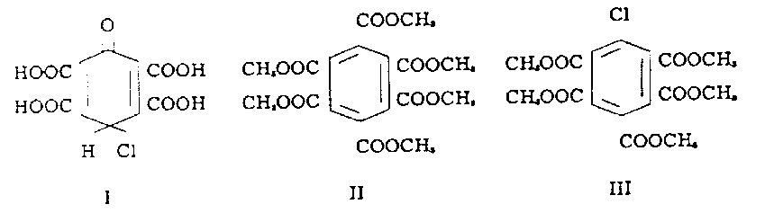

Department of Chemistry, State University of Iowa, Iowa City, Iowa
Abstract
The material isolated by Heller from stubs of graphite anodes used in Chlorine-caustic soda cells was shown by him to give the color in concentrated causiic soda has been reinvestigated. An extract from the stubs after treatment with nitric acid was found to consist of mellitic acid, pentacarboxychloro-benzene, a tetracarboxychlorobenzene of unknown configuration, and material of unknown structure which is the source of the color. The acids were formed during the treatment with nitric acid. The color forming material seems to be of high molecular weight and structurally more complex than proposed by Heller.

Results
The procedure for the investigation is summarized in the flow sheet (below).
By methylation of the yellow material with diazomethane an oil was obtained from which hexamethyl mellitate (II), pentamethyl chlorobenzenepentacarboxylate (III), and a tetramethyl dichlorobenzenetetracarboxylate were recovered by sublimation, distillation under reduced pressure, fractional crystallization, or chromatographic separation on alumina. The structure of pentamethylchlorobenzenepentacarboxylate (III) was demonstrated by comparison with a sample synthesized from pentamethyl-chlorobenzene (4). The tetramethyl dichlorobenzenetetracarboxylate was not obtained in sufficient quantities to be characterized. These three compounds did not give a color in 50% caustic.
The red residual oil obtained after removal of these compounds could not be distilled, sublimed, or crystallized and upon treatment with alkali dissolved slowly and gave a reddish purple color. This oil after treatment with HBr gave a solid which was water soluble and gave the reddish purple color with alkali.
An aqueous solution when passed through a cation exchange resin (IR-120H) gave an eluate which, on removal of the solvent, yielded a red amorphous powder. This product could not be purified further by recrystallization and was obtained in insufficient amounts to characterize further.
FLOW DIAGRAM NOT SHOWN
The mellitic acid could also be isolated from the yellow solid as the ammonium salt hexahydrate by treatment with concentrated ammonium hydroxide. The structure of this salt was demonstrated by acidification and conversion to the methyl ester. The mother liquor from the ammonium mellitate after acidification and methylation gave pentamethyl chlorobenzenepentacarboxylate.
The presence of mellitic acid in the yellow solid raised the question whether this acid was produced from the graphite anodes directly during the formation of the caustic or was formed in the isolation by the recrystallization step using concentrated HNO3. Following the isolation procedure of Heller but omitting the recrystallization from HNO3 gave a dark green tar which produced a dark purple color when boiled with 50% caustic. Methylation of an ether suspension of the tar followed by fractional distillation under reduced pressure gave yellow oils which refused to crystallize even when seeded with the esters mentioned. The oils gave no color with 50% alkali. The dark green tar when treated with HNO3 gave an orange solid which showed similar properties to those of Heller's material. These results indicated that the recrystallization from HNO3 degraded the more complex compounds formed from the anode during cell operation into the simpler acids. The dark green tar did not contain any suspended carbon so that the latter could be ruled out as the source of the mellitic acid.
This degradation of the complex mixture obtained from the anodes by HNO3 into simpler compounds suggested a direct study of the compound which formed the purplish-blue color in 50% caustic. The filtrate from the precipitation of the mellitic acid as the ammonium salt was heated with 50% caustic until the bluish-purple color developed. Acidification with HC1 followed by evaporation to dryness gave a yellow-brown solid. This material occasionally would give, upon ether extraction in a Soxhlet extractor, a small amount of orange-tan material which produced the bluish-purple color immediately in cold 50% caustic. This behavior was not consistent and, in the majority of the attempts, the extraction did not give any ether soluble solids. Further chromatography was not successful due to the strong adsorption on the column.
Purification of the material by passing through cation and anion exchange resins gave an amorphous powder which resisted crystallization and further purification.
The results obtained with Heller's compound indicated that at least 70% of his material consisted of mellitic acid, pentacarboxychlorobenzene and tetracarboxydichlorobenzene. The physical data reported for the pyromellit acid chloroquinol (I) approximate very closely the values for pentacarboxychlorobenzene (IV).
Detailed experimental stuff snipped
HIT THE BACK BUTTON ON YOUR BROWSER